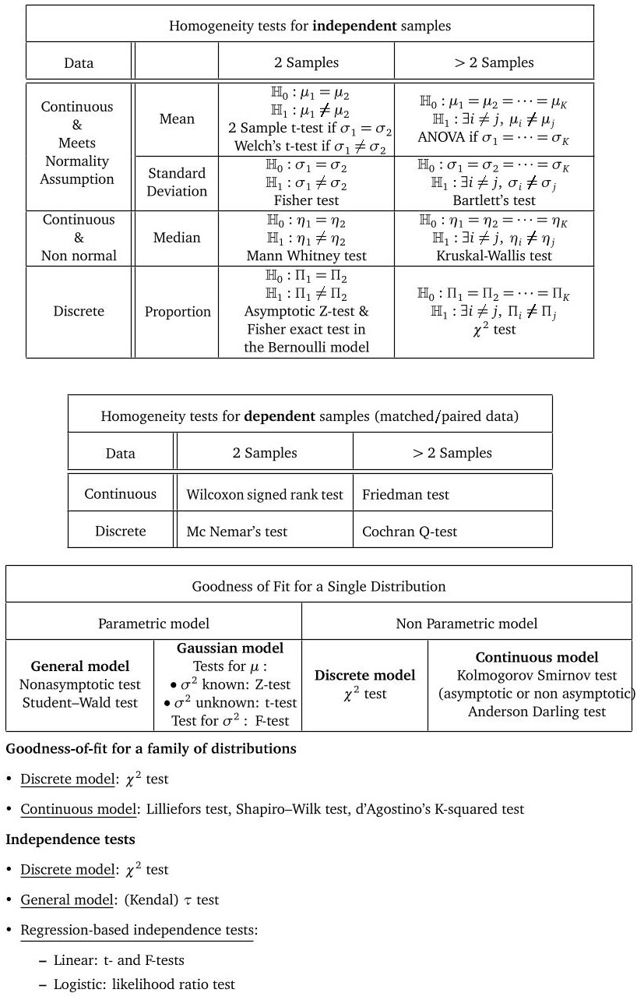

SDA Statistics and Data Analysis
Introduction
This repository aims at providing some examples of application of statistics to real world datasets. In this introductive page:- we give a visual representation of famous hypothesis tests.
- we provide some tips and advices for the projects of the course.
An overview of several famous hypothesis tests
Some tips for your projects
- Respect the chronological path of decisions.
Make sure that you have well understood the structure of the data and that you have well established the question that you want to investigate (i.e. clearly write the null hypothesis and the alternative). Otherwise, it is likely that you will choose the wrong test for your particular data and/or for the proposed hypothesis. - Do not forget that $\mathbb H_0$ and $\mathbb H_1$ do not play symmetric roles (and understand why).
Testing procedures are designed to provide a theoretical control of the type $I$ error. Then, deriving theoretical guarantees regarding the type $II$ error is not impossible but more involved. In most cases, the theoretical guarantees that can be provided regarding the control type $II$ error are asymptotic (and typically correspond to a power of the test tending to 1 as $n$ goes to $+\infty$). Non asymptotic theoretical control on the power is in much cases not known. - Missing the concrete difference between homogeneity tests and independence tests.
Keep in mind that homogeneity tests aim at understanding if two (or even more) samples have been are drawn from the same population, whereas independent tests are concerned with whether one attribute is independent of the other and involve a single sample from the population. - Make sure that you are not evaluating the prediction performance of a model with instances used to train it.
- Correlation is not causation.
Just because frogs appear after the rain doesn't mean that frogs have rained! - Do not mix up the notions of bias and consistence.
Let us consider random variables $(X_i)_{1\leq i \leq n}$ i.i.d. with $X_1 \sim \mathcal B(p)$ (for some $p \in (0,1)$). Then,- $X_1$ is an unbiased but not consistent estimator of $p$.
- $\frac{1}{n} \sum_{i=1}^n X_i$ is an unbiased and consistent estimator of $p$.
- $\frac{1}{n+1} \sum_{i=1}^n X_i$ is a biased and consistent estimator of $p$.
- $X_1 / 2$ is a biased and not consistent estimator of $p$.
- Make sure that your dataset fits with the assumptions of the statistical test used.
The typical assumption that you may check is the normality assumption. But do not forget that for ANOVAs for example, dealing with a continuous variable is an important assumption. If the dependent variable only takes a few different values, it may not be legitimate to analyze it as a continuous variable.
Another possible error is the inappropriate use of Chi-square test when numerical value in a cell is less than 5. - Make sure we did not apply unpaired t-test for paired data.
A common error is made during the computation of paired and unpaired data. It is necessary for the measurements of two different groups that unpaired observations should be distinguished — for example, patients receiving alternative therapeutic regimens — from that of paired observations, when the comparison is done between two measurements made on the same individuals at different time intervals. For unpaired data, two sample t-test, Mann-Whitney U-test and Chi-square test are useful whereas for paired data the common paired t-test, Wilcoxon test and McNemar's test are used. - Be curious about how to put theory into practice.
Natural questions that you should think about are the following.- How random number generator works ?
- What optimization algorithm is used to estimate the coefficients in a logistic regression ?
- How to deal with a qualitative variable in a regression model?
The standard technique is the so-called One-Hot Encoding method. If some feature $X_j$ takes value in a finite space $\mathcal X$ of small cardinality $d$, one can create $d$ dummy variables taking value in $\{0,1\}$ so that every unique value in $\mathcal X$ will be added as a feature. - How to deal with missing values?
There are several usual ways to handle missing data:- Delete rows with missing data
- Mean/Median/Mode imputation
- Assigning a unique value
- Predicting the missing values
- Using an algorithm which supports missing values, like random forests
- How to deal with outliers ?
Keep in mind that theoretical results provided in the course are more or less robust to model mispecification. Let us consider the example of outliers. Suppose that we have a sample of size $n$ where each variable is drawn from a standard normal distribution except that 1/20 of the dataset is replaced by samples drawn from a normal distribution with unit variance but a mean of 100. If we want to estimate the mean value $0$ of the original samples, using the empirical mean is not the best choice possible since it is highly sensitive to outliers. One possible solution consists in using the so-called \textbf{median of means technique} which works as follows.- Shuffle the data points and then splits them into $k$ groups of ⌊$n/k$⌋ data points.
- Compute the Arithmetic Mean of each group.
- Finally, calculate the median over the resulting $k$ Arithmetic Means.
- How to select the testing procedure?
Let us give a motivation with a concrete example. The t-Test and the Wilcoxon Rank Sum Test can be both used to compare the mean of two samples. The difference is t-Test assumes the samples being tests are drawn from a normal distribution, while Wilcoxon Rank Sum Test does not. Hence, a natural question is why would we use the t-Test if the Wilcoxon Rank Sum Test address the same problem with fewer model constraint ?
One short answer to this question is the usual No free lunch principle. If the Wilcoxon Rank Sum Test can be used beyond the gaussian model, this should lead to a less powerful test in the gaussian model where both tests can be used.
A (non exhaustive) list of common errors in statistics and related fields
- Sampling errors
A sample is a subset of the targeted population. This implies that every dataset may contain groups that are over/under represented. Such unbalance will influence (sometimes dramatically) the results of an analysis. As a consequence, this is a powerful tool to manipulate opinions (in medias or in politic...). Note that unbalanced dataset is not always due to malicious people who want to use the data for their benefit. Dealing with unbalanced datasets is often intrinsic to the problem tackled. This is typically the case when you try to identify rare cases in rather big datasets (e.g. in fraud detection). Confidence intervals or p-values are tools that allow to releave the uncertainty due to such unbalanced structure. However, there are some cases where finding confidence intervals can be tricky (for example for regression coefficients). Methods have been proposed to cope with such situations. One can mention the example of the bootstrapping method. - Use methods beyond their theoretical framework of application
For example in multiple regression, distributions of variables need to be normal and relationships need to be linear. Another problem comes from the potential mulcolinearity of variables. These errors are commom in the scientific community (according to Schrodt (2010)). To avoid such issue, R contain some functions that can be used to make sure that assumptions are satisfied, such as gvlma(). - Errors due to bias
- The cherry picking consists in selecting people, facts or situations that correspond to what we want to show and then to generalize the results.
- Error in measurements
- Error in observations In a scientific experiements, it can be tempting to see what we want to see. To avoid this kind of issue, one can use the double blind method.
- Approximation error
A model is always a simplified representation of a complex real phenomenon. There is always an error lying in the part non-explained by the model. Pearson and Kendal's R, the Cohen's D or the Cramer's V are tools allowing to measure this error. - Specification error
It is likely that at least one of the key features of the problem is not available. In consequence, estimation of the model may yield results that are incorrect or misleading.
The source for this course webpage is in github.